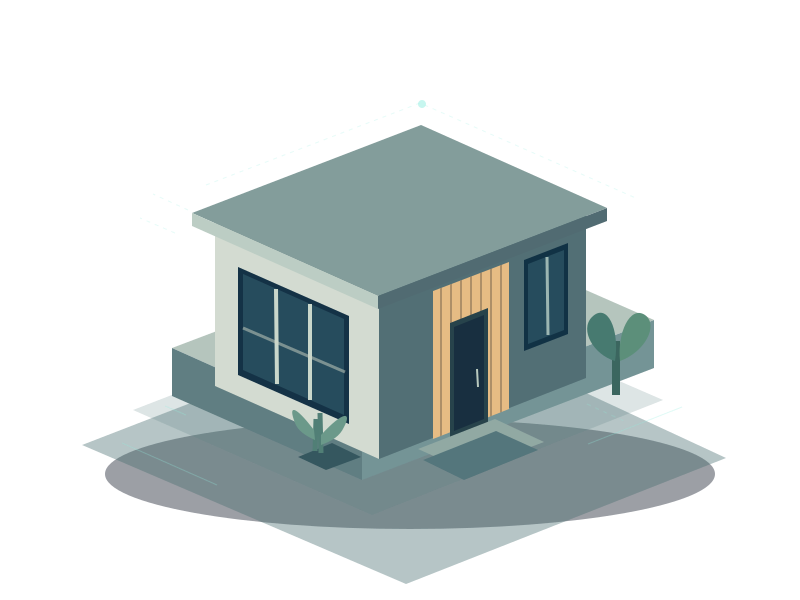

Australian private beta
Keep the story
of your home.
Your Digital Home Record.
From the first inspection to the next owner. Keep the photos, paperwork and details that tell your home’s story, together.
Invitation-only iPhone testing. Features vary by beta build.

ONE HOME. EVERY CHAPTER.
The house changes.
The record stays with you.
Building a home creates a lot of information. Living with it creates even more. Build2Home helps you keep the useful parts and know what to do next.
EXPLORE AN ILLUSTRATIVE HOME RECORD
A clearer room walkthrough.
FROM FINDING TO FOLLOW-UP
Know what you saw.
Keep what happened next.
Follow a room walkthrough, attach an inspection report and record each issue with its location, notes and photos. Keep repair milestones and your own checks together.
- Independent inspector booking steps and reminders
- Report findings with page references
- Issue history and owner repair observations
LESS SEARCHING. MORE CONTEXT.
A receipt is useful.
A receipt with its
whole story?
Even better. Connect the details that are easy to forget: which room, which appliance, which finish, what was done and when.
The kitchen oven.
A little organisation today.
A useful record for years to come.
START WITH THE HOME YOU HAVE
A useful record,
one step at a time.
You don’t need every document or date to begin. Add what you know, leave unknown details blank and build the record as you go.
- 01
Add your home.
Choose its state or territory, property details and the dates you know, including future planned dates.
- 02
Follow the guide.
Plan an inspector, walk through your rooms and record issues with the context and evidence you have.
- 03
Keep it useful.
Add documents, equipment and maintenance. Use separate supporting records for rental inspections.
- 04
Choose what to share.
Preview selected reports or buyer handover packs. Keep your private seller archive for yourself.
BE CLEAR ABOUT WHAT’S KEPT WHERE
On your phone.
Under your control.
Photo and document copies stay on the phone where you add them. Equipment, maintenance and sale preparation records are also stored locally. They don’t automatically appear on a different phone.
Supported home, issue, checklist and rental-note records use your cloud account. Export and check your local backups before changing phones or uninstalling.
Read the privacy information ↗A FEW THINGS WORTH KNOWING
Your questions,
answered.
Who is Build2Home for?
Homeowners and property investors who want a practical record of a home, from build and handover through repairs, maintenance, rental preparation and eventual sale. It is currently being tested with a small private iPhone beta group.
Does it work across Australia?
You can choose an Australian state or territory for your property. Guidance links depend on that choice. Rules differ locally: automatic statutory reference calculations are currently NSW-only. Build2Home does not determine your legal deadlines or certify compliance.
Are photos and documents backed up automatically?
No. These copies stay on your phone. Export ZIP/JSON backups and keep the originals. Supported account records sync separately. Signing in on a new phone alone does not restore local files.
Can I hand the record to a buyer?
The beta includes selected buyer handover exports, with a preview before sharing, and a separate private seller archive. This does not transfer the property or grant the buyer access to your account. Review original documents and photos for private information before sharing.
How much will it cost?
Public pricing has not been announced. We’re focused on testing the workflow and getting the useful details right before a wider launch.
Can I download it today?
Testing is invitation-only through TestFlight on iPhone. Email the team to request access; an invitation is not automatic. Some features are in candidate builds and may not yet be available to every tester.
HELP SHAPE THE NEXT CHAPTER
Building a home?
Build a better record.
We’re testing Build2Home with real home journeys in Australia. Tell us where you are in yours.
Request private beta access build2home.support@gmail.comThis opens your email app. No signup form or tracking pixels.